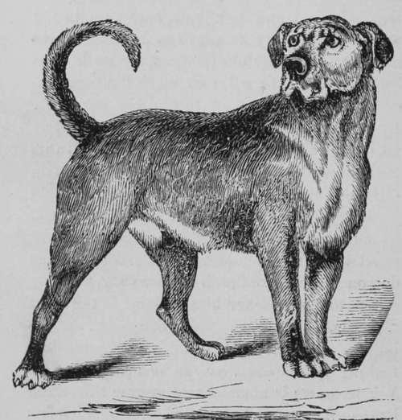
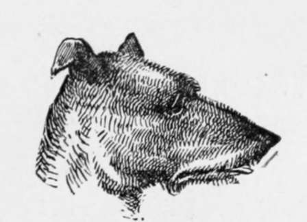

Mastiff
Description
This section is from the book "Breeding, Training, Management, Diseases Of Dogs", by Francis Butler. Also available from Amazon: Breeding, training, management, diseases.
Mastiff
Serious and stern, majestic, brave and bold, The Baron's pride, in Halcyon days of old, Eseuteheoned oft, by knights and men of state The dreaded guardian of the castle gate. His head, somewhat the contour of the Bull, With pendant ear, deep chest, both broad and full :
In color red. or tawny, by the by, Deep hanging jowl, black lip, and threatening eye :
His coat close set, shoulder doubly strong, From tip to tip, he may be six feet long. By massive walls and ponderous bars confined, Alone, he reigns, contented and resigned ; Heediess of danger, marks no distant sound, Solemn and pensive, stalks his dreary round : The thief's detector, and the foeman's dread, Silent and listful, notes each stealthy tread ; Honest, ingenuous, true in all his ways, Emblem of safety, in the bygone days. Let not degenerate stock his name disgrace. Nor soil the virtues of this noble race ; Dauntless of yore, and just as sturdy now, Ho bears the stamp of England on his brow ; Earnest in friendship, and of candor full, Distant to strangers, like a true John Bull.
Another method is adopted to prevent a dog from pounding his game. He is taught to fetch and carry that only, which will hurt his mouth, if he press hardly on it. But the difficulty in teaching a dog to fetch is greatly increased, when he is continually suspicious of injuring himself; therefore if this method be adopted, great care must be taken that the article used for fetching purposes be so fixed, as in no way to injure his mouth except upon hard pressure. A better and safer method however, I believe to be. to accustom him to carry a partridge or quail, teaching him by suitable instruction, reprimand and correction, that he must neither mumble, maim, nor mutilate it. He will not be found to fetch as cheerfully, of his own free will, if his gums have suffered by the trial. Nevertheless the spiking system, if carefully carried out and without severity may occasionally be advisable in perverse subjects, when the disposition to pound appears difficult to eradicate.
Mastiff
The principal error committed in training Sporting-dogs, is in the use of severe and threatening language not unfrequently accompanied by the lash, to induce the animals to perform an act, which they cannot thoroughly comprehend. Now, when a dog is caught in an act of positive transgression, punishment may serve to convince him of the wrong committed ; but on the other hand, an act of non-committal is not so easily defined, and the correction may often be interpreted by the sufferer, as a caution against its performance. Therefore encouragement, rather than threats should be the basis of all our attempts to direct the instinctive developments of the sporting-dog ; our rebukes and punishments should be reserved for enforcing submission, and of testifying our disapproval of conscious disobedience. Every thing should be done to ensure both respect and affection, and severity will seldom be called for. Recipes for training dogs will be of little service, unless their owners have common sense enough to comprehend somewhat of the varied dispositions of canine nature. Some animals need to be dealt very gently with, whilst others are almost insensible to moderate treatment, firmness without severity, determination softened by patience, must be our general rule.
The exceptions must be managed, according to the judgment of the trainer.
The amount of reprimand and correction required in such hard cases should however bo dealt out in graduated doses, so that, at all events enough may suffice. The Sporting-dog, especially should have a few minutes run every day, not only for the benefit of his health, but to prevent his wildness in the field. Dogs, after being tied up for a length of time, become so elated, when set at liberty, that they are not only excessively wild and often unruly, but unfitted for a day's work and apt to wear themselves out in a hurry ; whereas a dog, regularly exercised, is seldom known to tire, is always in good condition, easily kept under good command and rarely troubled with sore feet. Many sportsmen are in the habit of letting fly a charge of dust-shot at their dogs, when they undertake to run after the game, or when they refuse to obey call. In France, especially, I have seen many peppered sterns. It may have a. good effect sometimes, (if our animals could only get used to it) but I consider it a very dangerous practice, as I have known several dogs utterly ruined by it.
An old and well trained dog is very advantageous in assisting in the Gold-training of the young beginner; though the latter should be previously well versed in all necessary acts of obedience and submission, or it will generally render him the wilder and interfere with the tactics of the more experienced. If the young dog you arc training, give evident proofs of a lack of nose, or game-scenting powers, you had better dispose of him at once, as this is a defect, for which no virtue can ever atone. It is well to carry a few crackers in your game hag and give your dog a bite now and then, to enliven his spirits and increase his endurance. Give him but little meat, during the working season, unless it be well boiled and mixed with Indian meal, oat meal or cracker, etc., whichever be most convenient or suit him best; but, if you can get nothing but meat, don't keep him too short, on that account, as his strength must be kept up. A good rubbing, a good supper, and a warm bed will do him good after a hard day's work.

Continue to:
- prev: Training And Breaking Pointers And Setters
- Table of Contents
- next: General Remarks On Tile Dis Eases Of Dogs